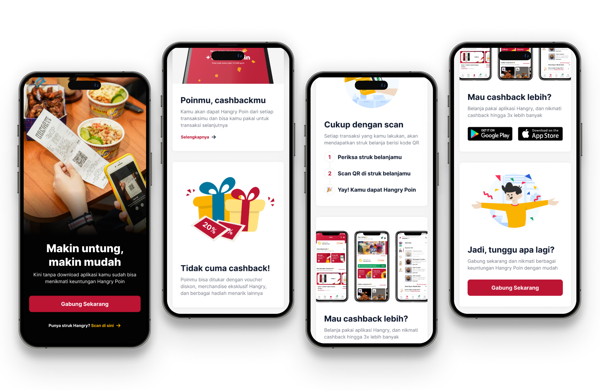
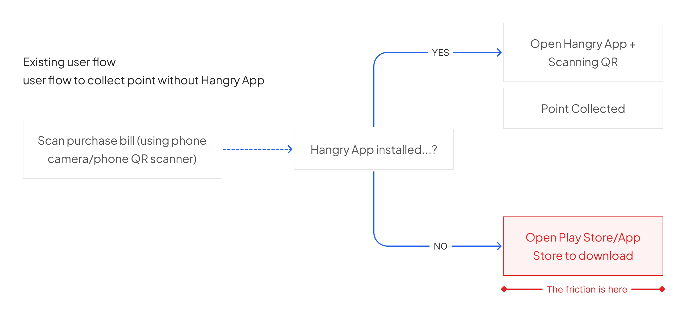
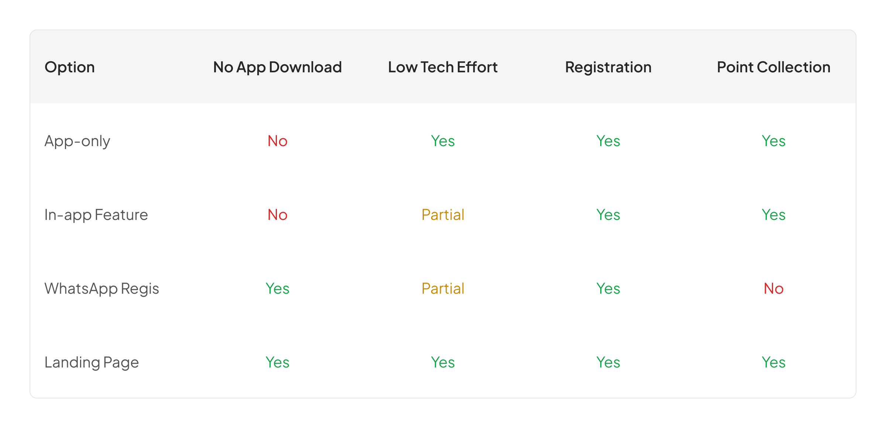
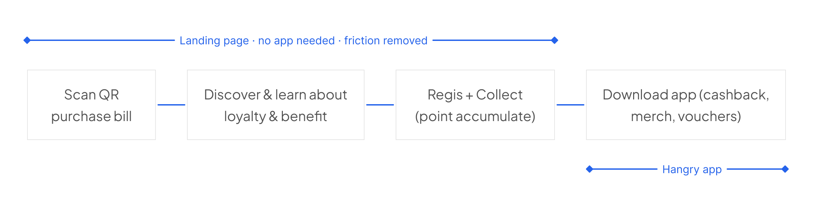
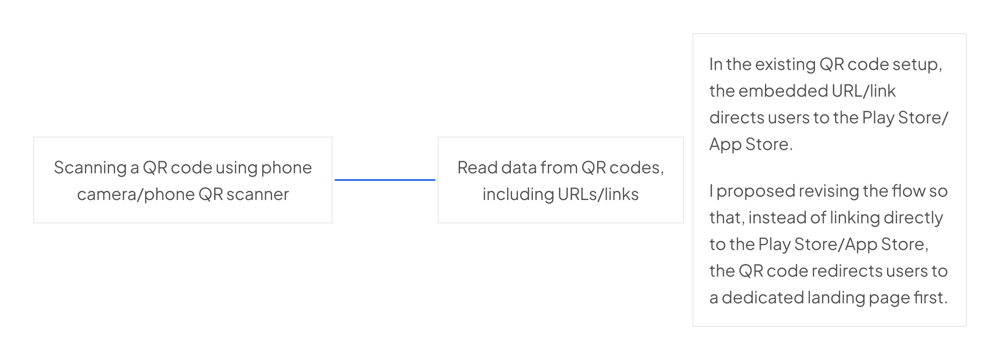
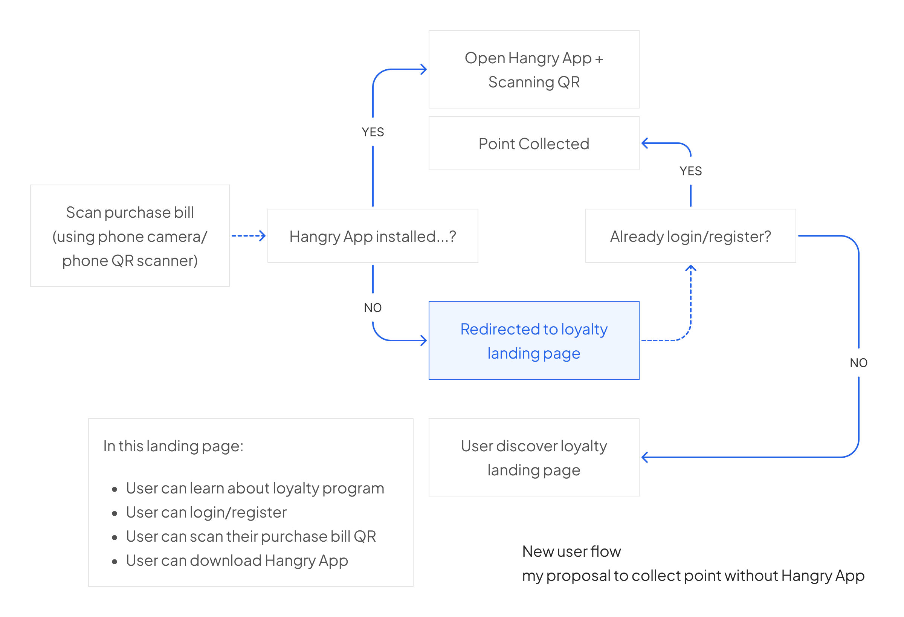
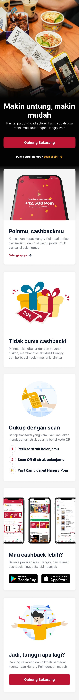

Registrations numbers were dropping. After digging into the actual user flow and running user interviews, I found the real friction. A single overlooked step nobody had questioned. After I fixed it, new user registrations up 76% in 3 months.
Hangry is a multi-brand virtual restaurant, focused on delivery. Hangry has a loyalty program for their customers to collect "Hangry Points" by scanning the QR code from their purchase bill. Hangry Points can be used as cashback for upcoming purchases or redeemed for merchandise.
In April 2021, new loyalty program registrations dropped 30% in a single month, from 4,217 to 2,916. Some assumptions arose.
"Is the program attractive enough to customers?"
"Is the UI confusing?"
"Are the benefits not interesting?"
All reasonable assumptions, but unfortunately all wrong.
Before touching anything related to design, I needed to know and understand what's actually wrong here. So, I coordinated with the Ops & Customer Experience team to reach customers who had bought Hangry food but never joined the loyalty program.
We gathered around 10 users and I asked them one by one via online call with two main things:
"Did they know the loyalty program existed?"
"Why hadn't they joined?"
Surprisingly, the answers were consistent around these three:
"I know about the program, but I'm too lazy to scan the bill because I have to download the app first."
"I don't want to download another app, my phone storage is already full."
"I'd like to join the program, but I don't really know what the benefits are. If I have to download the app just to find out, I'm not interested."
Based on that user interview, the real problem wasn't the program, it wasn't the benefits, and it wasn't even awareness. It was a single friction point: requirement to download the Hangry App just to participate in the program.

The interviews made one thing clear: the app was the barrier. Every user who hadn't joined said some version of the same thing, they didn't want to download anything.
That ruled out two directions immediately. The existing flow required app download before anything else could happen. Adding a new feature inside the app still assumed users had it installed. Neither moved the needle on the actual problem.
So the question shifted: what if users could register without downloading the app at all? And if that was possible, what was the right way to do it?
I mapped the realistic options against the constraints we had, what users needed, what the business needed, and what engineering could actually take on given their current workload.

A landing page covered everything: no download, low engineering effort, registration, and point collection in one place.
But there was another concern that came up. If users could register and collect points without the app, what reason did they have to download it at all?
It was a real tension. The loyalty program was one of the core reasons Hangry built the app. Solving the friction too completely might undermine that.
So I thought about what the app actually does that a landing page never would: redeeming.

Collect anywhere. Redeem only in the app.
The landing page wasn't replacing the app. It was feeding it. Users who arrived with zero points had little reason to download anything. But users who had accumulated points, who could see a real number sitting there, now had something concrete waiting for them. The download felt worth it because there was already something to redeem.
The friction wasn't removed. It was moved to a better place in the journey.

Instead of redirecting users to the Play Store or App Store when they scanned their purchase bill QR, they'd land on a web page where they could see the benefits, register directly, and collect points, all without downloading anything.

No wireframes. The timeline was tight, and honestly, by the time I got to Figma the decisions were already made. The thinking phase did the heavy lifting, crafting was execution.
The page was mobile-only by design. The entry point was a QR scan on a purchase bill, users were always on their phone. A desktop version would've been a solution to a problem that didn't exist.
I wrote all the copy myself. The hook was the most important line on the page: Makin untung, makin mudah — kini tanpa download aplikasi kamu sudah bisa menikmati keuntungan Hangry Poin. Every user in the interviews said some version of "I don't want to download an app." So that's what the first sentence solved. Not buried. Not saved for later. First line.
The landing page also had a dedicated section for the Hangry App, framed as: Mau cashback lebih? Belanja pakai aplikasi Hangry. This wasn't upsell for the sake of it. It was the "collect anywhere-redeem in app" decision showing up in copy form. Same logic, different medium.
I came into design from copywriting. This section is where that background shows.

The program that was losing users month-over-month reversed course, not because the product changed, but because the barrier to entry was removed.
New User Registration (February – July)
Landing page launched in May 2021
Before vs After (3 months)
Total new registrations comparison
"The most dangerous assumptions aren't the ones that are clearly wrong, but they're the ones that are reasonable."
"The UI is confusing."
"The benefits aren't attractive."
Both pointed toward redesign, but both were wrong. The real problem had nothing to do with design at all. Finding it required asking the right people the right questions, not staring harder at the product.
That's the thing about reasonable assumptions, they're the hardest ones to question. Now I question them first.